Le Nether
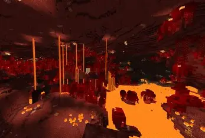
Le nether est une dimmension de lave et de feu accessible via des portails en obsidienne.
Le Nether est huit fois plus petit que le monde normal, on y voyage 8 fois plus rapidement.
La distance parcourue dans le Nether est donc multipliée par 8, faisant du Nether une zone de voyage rapide qui permet de parcourir
une grande distance alors qu'un laps de temps réduit s'est écoulé dans le monde normal.
Tout dans cet dimension fait penser à l'enfer : les couleurs,les structures,les créatures,la lave et le feu ...
Les structures,biomes et créatures présentes dans le Nether n'existent que dans le Nether et aucune autre créature,biomes ou structures d'autres dimensions y apparaissent.
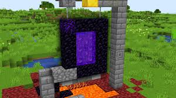
Les biomes :
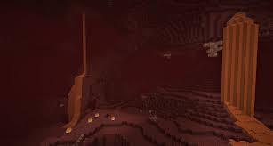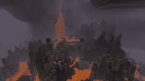
 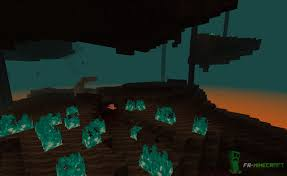
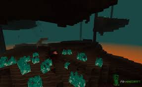
Les créatures :
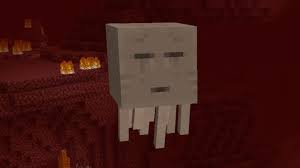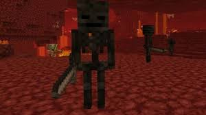 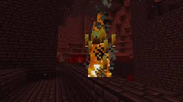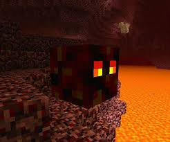 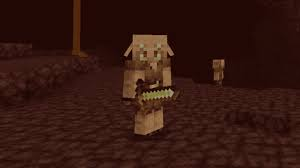
Les structures :
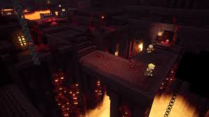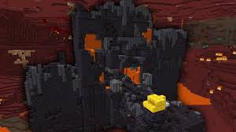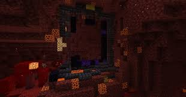